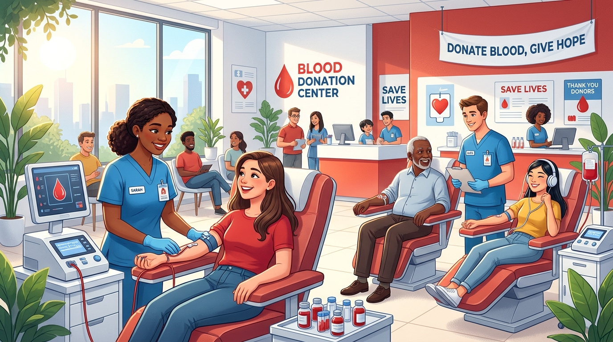

Emergency Trauma
Accident and trauma victims suffering acute hemorrhage often need 30 to 50 blood units within minutes to prevent shock.
Need: Up to 50 UnitsHuman blood cannot be manufactured synthetically in a lab. It only comes as a voluntary gift from healthy donors. Every single donation can save up to three patients recovering from traumatic injuries, complex surgeries, and cancer therapies.

Completely safe process with zero risk of infection
Where does your donated blood go? Hospitals rely on scheduled donations every day for these life-saving procedures.
Accident and trauma victims suffering acute hemorrhage often need 30 to 50 blood units within minutes to prevent shock.
Need: Up to 50 UnitsOpen-heart operations, joint replacements, and organ transplants require multiple units of packed red blood cells on hand.
Need: 2 to 10+ UnitsChemotherapy destroys both cancer cells and healthy bone marrow. Regular platelet transfusions keep cancer patients stable.
Need: Weekly TransfusionsPostpartum hemorrhage in new mothers and premature babies in NICU units rely on specialized, screened micro-donations.
Need: Immediate AccessClick on any blood group below to see who you can donate red blood cells to and who you can safely receive blood from.
Universal Red Blood Cell Donor
Donating blood is simple, quick, and safe. Here are the basic qualifications and the standard 4-step process.
Present a photo ID and complete a confidential health history questionnaire.
Staff check temperature, pulse, blood pressure, and a quick fingerstick hemoglobin test.
Relax comfortably while approximately 1 pint of blood is collected into a sterile bag.
Enjoy free juices and snacks for 15 minutes before heading back to your routine.
Confirm these 4 points to see if you are ready to donate today:
Common fears and misconceptions often stop eligible people from donating. Let's look at what medical science says.
Answer 4 quick multiple-choice questions to test your knowledge about transfusion medicine and donor health.
Register as a prospective donor in our local simulated directory, or search available donors by name, blood group, or city.
Your contact number will be masked for privacy in the public directory.
| Donor Name | Blood Group | City / Campus | Contact |
|---|